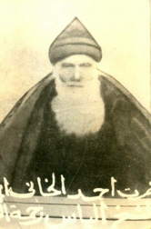

Ahmed Hânî (1651-1707)

Mem ü Zin adlý meþhur eserin yazarýdýr. Kürtlerin ünlü þair ve mutasavvýfýdýr. Eserlerini manzum þekilde kaleme almýþtýr. Eserlerinde, dönemin sýkýntýlarýný ve sahipsizliklerini dile getirmiþtir. Risale-i Nur'da, "Kürtlerin edib dahîlerinden Molla Ahmed Hani" (Tarihçe-i Hayat, s. 32) þeklinde kendisinden söz edilmektedir. Hânî Aþiretine mensubiyeti, Han Köyünde doðmasý ve Hâniyan Ailesinden ötürü Ahmed Hânî (Ahmed-i Hânî) olarak tanýnmaktadýr.Hânî, 1651 yýlýnda Hakkari Yüksekova'ya baðlý Han Köyünde doðdu. Babasýnýn adý Ýlyas, dedesinin Rüstem'dir. Ýlk eðitimini Diyarbakýr ve Bitlis'te aldý. Bilahare Doðu Anadolu'nun muhtelif yerlerinde Arapça, belagat ve dini ilimler okudu. Müsbet ilimlerle de ilgilendi. Özellikle astronomiye ilgi gösterdi.
Hânî, yörenin önemli merkezlerinden olan Cizre'de bulunduðu sýralarda meþhur eseri Mem ü Zin'i kaleme aldý. Kürtçe olarak kaleme aldýðý eserlerinde dini konulara aðýrlýk verdi. Uluhiyet ve varlýk konularýný iþledi. Ahlak, sosyal ve kültürel konularla ilgili görüþlerini þiirleriyle dile getirdi. Sünni akidesine baðlý olup, bu çerçevede kainatýn yaratýlýþý, insanlara yüklenmiþ bulunan görevler vs. konularý üzerinde durdu.
Hânî, halk arasýnda veli zat olarak kabul görüp, Þeyh Ahmed-i Hânî olarak ün yaptý. Tasavvufta önemli bir konuma sahip olup, sadece Ýlahi aþkla ve günahlardan sakýnýlarak tam anlamýyla güzel vasýflara sahip olunabileceðini belirtti. Þiirlerinde iþlediði tema ve vurguladýðý konulardan ötürü Mevlana ve Molla Cami'nin etkisinde kaldýðý ileri sürülmektedir.
Tasavvufla olduðu kadar insanlarýn problemleriyle de ilgilendi ve onlarla içiçe yaþadý. Toplumda yaþanan sýkýntýlar ve halkýn sahipsizliðinden yakýndý. Bu sýkýntýlardan kurtulmanýn yolu olarak; toplumsal dayanýþma, bilgilenme ve yardýmlaþmayý önerdi. Kendi üzerine düþeni yapmak için gayret sarf etti. Ýlim ve hikmetin maddiyattan önce gelmesi gerektiðini vurgulayarak, insanlarýn bu konudaki zaafýna dikkat çekti.
Hânî, Doðubeyazýt'ta bulunduðu sýralarda Þii alimlerle ilmi münazaralara girdi. Þia alimleri Sünni alimleri dini konularda maðlup edip, Þiiliði yaymak maksadýyla Ýran'dan Doðu Anadolu'ya gelmiþlerdi. Ýþe Doðubeyazýt'tan baþladýklarý için Ahmed Hânî ile ilmi sohbete baþladýlar. Ehl-i Sünnet mezhebinin hak ve doðru olduðunu, kendilerinin yanlýþ ve batýl inançlara sahip olduklarýný görerek maðlup oldular. Bunun üzerine umduklarýný bulamayarak Ýran'a geri döndüler.
Halk arasýnda veli zat olarak kabul edilen Hânî, bir çok kiþinin kurtuluþuna vesile oldu. Onun nasihatleri ile bir çok kiþi kötü alýþkanlýklarýndan ve yanlýþ yoldan döndüler (Münazarat, s. 105). Risale-i Nur'da kendisi için; edip dahilerden Molla Ahmed (Tarihçe-i Hayat, s. 32), Þeyh Ahmed (Münazarat, s. 105), meþhur Þeyh Ahmed (Kastamonu Lahikasý, s. 186) ifadeleri kullanýlmýþtýr. Abdulkadir Badýllý tarafýndan kaleme alýnan "Bediüzzaman Said-i Nursi: Mufassal Tarihçe-i Hayatý" adlý eserde Hânî; "edip, þair, hamiyet-perver, Resulullah'a aþýk bir zat" (I. Cilt, s. 94) olarak tanýtýlmaktadýr.
Hânî, ömrünün son yýllarýný Doðubeyazýt'ta geçirdi ve 1707 yýlýnda burada vefat etti. Halen ziyaretgah olarak kullanýlan türbesi Ýshak Paþa Sarayý'nýn yakýnýnda bulunmaktadýr. Bediüzzaman'ýn çocukluk devresi anlatýlýrken Hânî ve türbesi ile ilgili olarak ilginç bilgiler aktarýlmaktadýr. Bediüzzaman Hazretleri 14-15 yaþlarýnda iken ,bir ara Doðubeyazýt'a giderek bir süre orada kaldý. Gündüzleri medresede kalýr, gecelerini ise Hani'nin türbesinde geçirirdi. Gündüzleri bile girilmeye korkulan türbede gecelerini geçirmesi, halkýn dikkatinden kaçmadý. Bundan dolayý halk arasýnda Bediüzzaman için, "Ahmed Hani Hazretlerinin feyzine mazhar olmuþtur" denmeye baþlandý. (Tarihçe-i Hayat, s. 32)
Eserleri
En meþhur eseri Mem ü Zin'dir. Manzum ve mesnevi türünden olan eser 300 beyitten oluþmaktadýr. Bu eserde, Cizre yöresinin kültürel özelliklerini bulmak mümkündür. Eserini akýcý bir üslupla kaleme almýþtýr. Doktora çalýþmasýna (Michael L. Chyet; Studies on Mem ü Zin, A Kurdish Romance) konu olan eser, M. Emin Bozarslan tarafýndan Türkçe'ye çevrilmiþtir. Ayný zamanda filme alýnan eser ve müellifi hakkýnda dayanaðý olmayan iddialar ortaya atýlmýþtýr. Eserde Ýslam öncesi inançlarýn izlerinin arandýðý, eserde geçen bazý ifadelerin Zerdüþtlükteki inançla baðlantýlý olduðu þeklindeki iddialarýn tamamý gerçek dýþýdýr. Þairin, eserin baþýnda Yüce Allah ve Peygamber Efendimiz hakkýnda samimi ifadelerle övgüler yazmasý, varlýk ve hadiselerdeki zýtlýklarýn meydana getirdiði ahengi Cenab-ý Hakk'ýn azamet ve kudreti ile açýklamasý, eserin sonunda dua yazmasý, söz konusu iddialarý çürütmektedir. (M. Sait Özervarlý; "Hânî, Þeyh Ahmed", TDVÝA., XVI. C., s. 31-32.)
Çarkoþe; aþk, ayrýlýk ve kavuþma temalarý dört ayrý dilde kaleme alýnmýþtýr. Rubailerden oluþan eserin her bir mýsrasý Arapça, Türkçe, Kürtçe ve Farsça olarak ayrý ayrý yazýlmýþtýr.
Nûbahârâ Pýçûkân; Arapça-Kürtçe manzum sözlüktür. Giriþ kýsmýnda Kur'an-ý Kerim'i bitiren çocuklara yönelik olarak sarf ve nahiv konularýna yer verilmektedir. Eser on üç bölüm olarak kaleme alýnmýþtýr. Bu eserin muhtelif zaman ve yerlerde basýldýðý gibi þerhi de yapýlmýþtýr.
Akidâ Ýmâný; iman esaslarýný tamamen Sünni görüþ çerçevesinde ele almaktadýr. Eser seksen beyitten oluþmaktadýr. Cenab-ý Hakk'ýn sýfatlarý, dua, nübüvvet, tevhid, þefaat, kýyamet ve ahiret gibi konular iþlenmiþtir.
Sözü edilen eserler dýþýnda Akîdâ Ýslâmý, Yûsuf u Zeliha adlý eserlerin de kendisi tarafýndan kaleme alýndýðý iddia edilmektedir. Ancak, söz konusu eserlerin kendisine ait olup olmadýðý konusu henüz kesinlik kazanmamýþtýr.